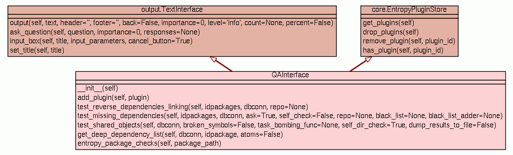

Class ErrorReportInterface
source code

Interface used by Entropy Client to remotely send errors via HTTP
POST. Some anonymous info about the running system are collected and sent
over, once the user gives the acknowledgement for this operation. User
should be asked for valid credentials, such as name, surname and email.
This has two advantages: block stupid and lazy people and make possible
for Entropy developers to contact him/her back. Moreover, the same
applies for a simple description. To improve the ability to debug an
issue, it is also asked the user to describe his/her action prior to the
error.
Sample code:
>>> from entropy.qa import ErrorReportInterface
>>> error = ErrorReportInterface('http://url_for_http_post')
>>> error.prepare('traceback_text', 'John Foo', 'john@foo.com',
report_data = 'extra traceback info',
description = 'I was installing foo!')
>>> error.submit()
|
|
|
|
None
|
prepare(self,
tb_text,
name,
email,
report_data='',
description='')
This method must be called prior to submit(). |
source code
|
|
|
None
|
|
|
ErrorReportInterface constructor.
- Parameters:
post_url (string) - HTTP post url where to submit data
|
prepare(self,
tb_text,
name,
email,
report_data='',
description='')
| source code
|
This method must be called prior to submit(). It is used to prepare
and collect system information before the submission. It is intentionally
split from submit() to allow easy reimplementation.
- Parameters:
tb_text (string) - Python traceback text to sendname (string) - submitter nameemail (string) - submitter email addressreport_data (string) - extra informationdescription (string) - submitter action description - Returns: None
- None
|
|
Submit collected data remotely via HTTP POST.
- Returns: None
- None
- Raises:
|